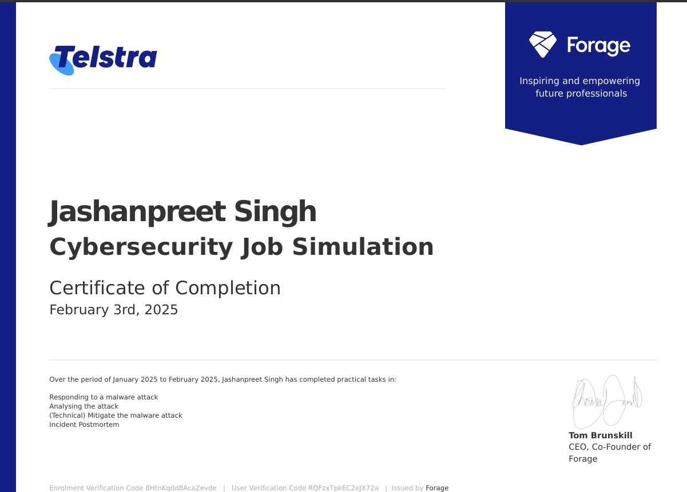

Certifications
Here are some of the certifications that I have achieved:
-
Certification in Basic Python
🔹Developed Python coding for Back-end development and socket programming.
🔹Strengthened my skillset in programming concepts.
🔹Formulated different projects in Python.
-
ISC2 Certified in Cyber Security
🔹Gained insight into cyber security Governance including laws, policies, standards, procedures and guidelines.
🔹 Learned how organizations respond to, recover from and continue to operate during unplanned disruptions using BCP, IR and DR.
🔹 Recognize foundational security concepts of information assurance.
🔹 Identify types of network (cyber) threats and attacks and discuss common tools used to identify and prevent threats.
🔹 Identify key concepts of logging, monitoring and encryption.
-
Microsoft's SC-900
🔹Learned Microsoft security and compliance concepts.
🔹Understand about Microsoft identity services including Entra ID, Active directory.
🔹 Use the Capabilities of Microsoft security solutions including DDoS protection, Azure firewall, Bastion, key vault etc.
🔹 Understood the working of Microsoft defender and Microsoft sentinel which are used the manage the risks faced my an organisation.
🔹 Learned about the capabilities of Microsoft Compliance solutions including Microsoft service trust portal, Microsoft Purview which show us how user data is managed and audited.
-
Telstra Cyber Security Job simulation
🔹 Vulnerability Analysis – Investigated the Spring4Shell (CVE-2022-22965) exploit and its impact on applications running on Tomcat.

🔹 Incident Detection & Response – Analyzed security bypasses in a network and identified patterns of malicious activity.
🔹 Incident Postmortem Reporting – Documented the incident, including detection, root cause analysis, mitigation, and future preventive measures.
🔹 Firewall Rule Implementation – Created a Python-based firewall rule to block malicious requests targeting vulnerable applications.
🔹 Threat Intelligence & Security Controls – Learned how to mitigate security risks by applying best practices in network security.
🔹 Real-World Cybersecurity Experience – Gained hands-on exposure to threat detection, vulnerability management, and secure coding practices.